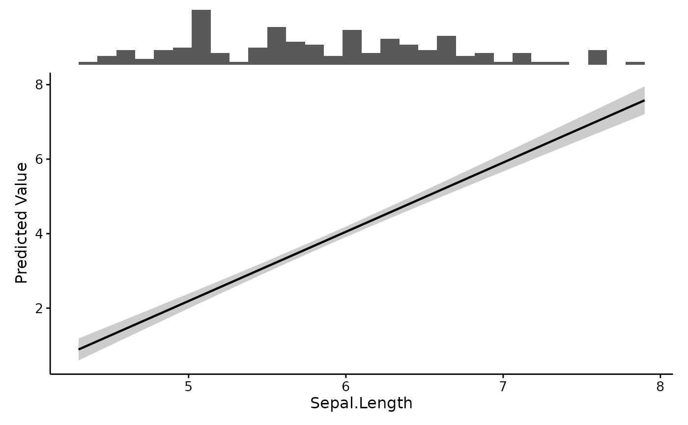
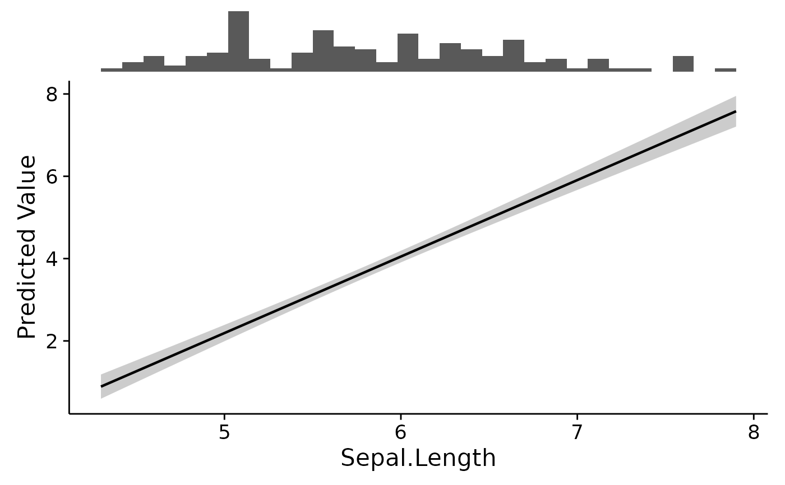
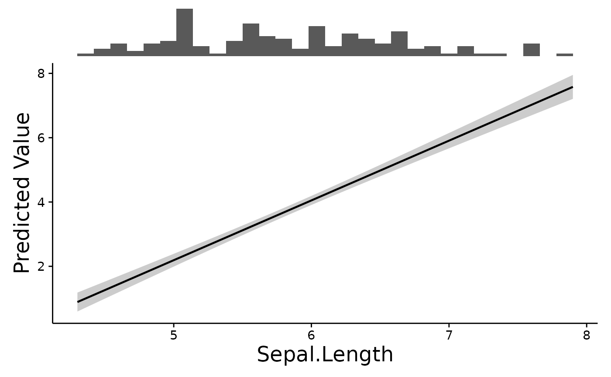
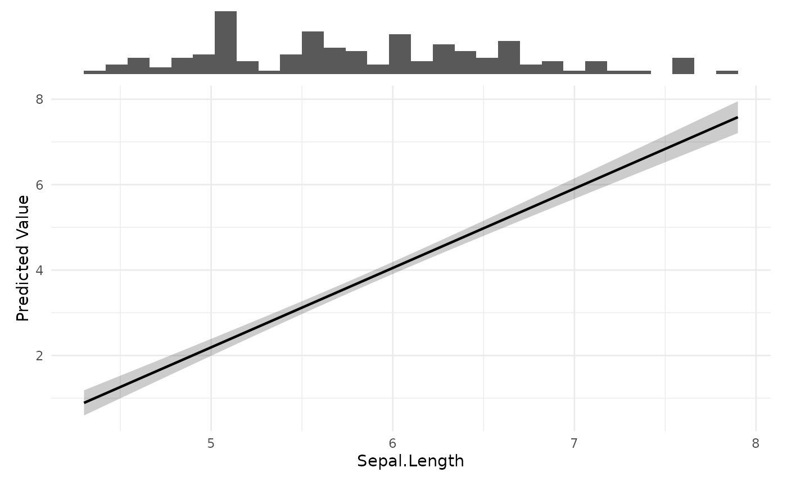

The default look for plotEffects(). Built on ggpubr::theme_pubr(), which
targets the conventions journals tend to expect: no background panel, no
grid, plain black axis lines, and text large enough to survive being shrunk
into a column.
Usage
theme_fancyfx(
base_size = 12,
base_family = "",
legend = "right",
border = FALSE,
axis.title.size = NULL,
axis.text.size = NULL,
title.size = NULL,
subtitle.size = NULL,
caption.size = NULL,
legend.title.size = NULL,
legend.text.size = NULL,
strip.text.size = NULL
)Arguments
- base_size
Base font size in points. The usual reason to change it is figure width – a two-column figure needs larger text than a full-page one to end up the same size on the page.
- base_family
Base font family. Left empty by default so the device chooses; set it to match a manuscript's font.
- legend
Legend position:
"right","top","bottom","left", or"none".- border
Whether to draw a full box around the panel rather than only the left and bottom axis lines.
- axis.title.size, axis.text.size
Size of the axis titles and of the numbers along the axes.
- title.size, subtitle.size, caption.size
Size of the plot title, subtitle and caption.
- legend.title.size, legend.text.size
Size of the legend title and of its entries.
- strip.text.size
Size of facet strip labels.
Sizing text
Raising base_size scales every element at once, keeping their relative
sizes balanced, and is usually all that is needed. Each element also takes
its own argument for the cases where it is not: a long axis title that needs
to be smaller than the numbers beside it, or a journal that specifies a size
for one thing and not the rest. Anything left NULL follows base_size.
Panel labels – the A, B, C on a multi-panel figure – are drawn by the
arranging step rather than the theme, so they have their own label.size
argument on combinePlots() and comparePlots().
See also
plotEffects(), which uses this by default, and
fancyfx_palette() for the matching colours.
Examples
fit <- lm(Petal.Length ~ Sepal.Length, data = iris)
# The default
plotEffects(fit, iris, "Sepal.Length")

# Everything larger, for a narrow two-column figure
plotEffects(fit, iris, "Sepal.Length", theme = theme_fancyfx(base_size = 16))

# Or one element at a time
plotEffects(fit, iris, "Sepal.Length",
theme = theme_fancyfx(base_size = 14,
axis.title.size = 18,
axis.text.size = 11))

# Or hand it any other ggplot2 theme
plotEffects(fit, iris, "Sepal.Length", theme = ggplot2::theme_minimal())
